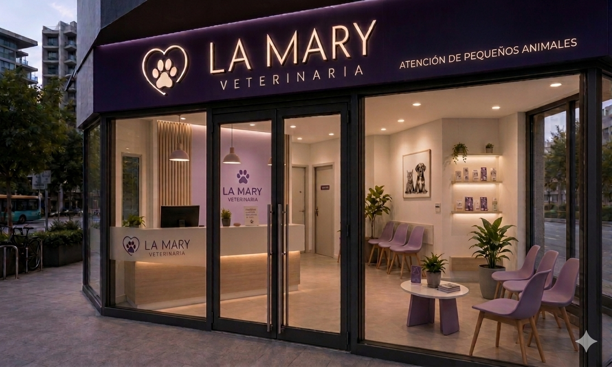
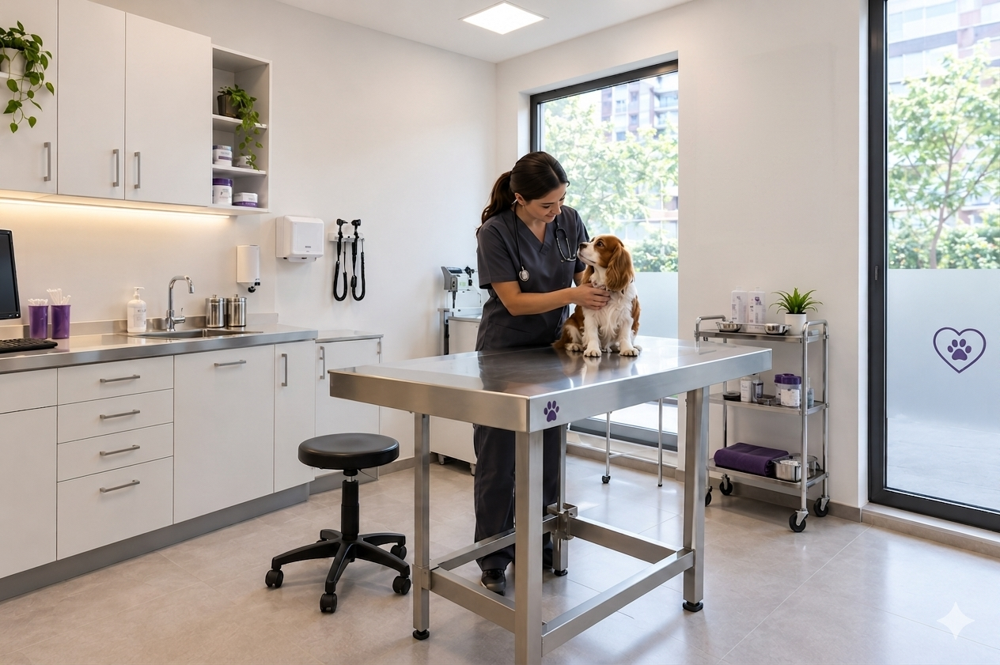
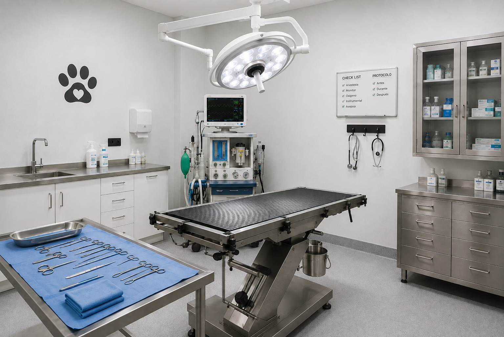
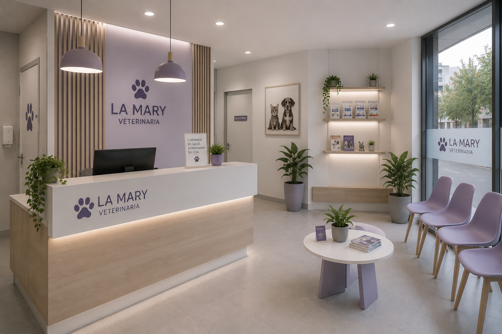

Sobre nosotros
Veterinaria La Mary nació en 2016 con el compromiso de brindar atención veterinaria de calidad y acompañar a las familias en el cuidado y bienestar de sus mascotas.
Somos una clínica veterinaria dedicada a la atención de pequeños animales. Contamos con un equipo de profesionales comprometidos con la salud y el bienestar de cada paciente, ofreciendo una atención cercana, responsable y basada en el respeto y el amor por los animales.
Desde nuestros comienzos, seguimos creciendo junto a nuestros pacientes y sus familias, manteniendo siempre el mismo compromiso: cuidar su salud y mejorar su calidad de vida.

Nuestra misión
Brindar atención veterinaria integral y de calidad, priorizando la salud, el bienestar y la calidad de vida de cada paciente, mediante un trato profesional, responsable y comprometido.
Nuestra visión
Ser una clínica veterinaria reconocida por la calidad de su atención, el profesionalismo de su equipo y el compromiso con el bienestar de los animales y sus familias.
Nuestros valores
💜
Compromiso
Trabajamos con responsabilidad y dedicación en cada atención.
🐾
Respeto
Promovemos un trato respetuoso y cuidadoso hacia cada animal.
⭐
Profesionalismo
Brindamos una atención basada en conocimientos y responsabilidad.
Nuestras Instalaciones
Espacios cómodos y equipados con tecnología moderna para el cuidado de tu mascota.



Lo que dicen nuestros clientes
⭐⭐⭐⭐⭐
"Excelente atención con mi perrito. Súper responsables y amorosos."
Camilo (Dueño de Rocco 🐾)
⭐⭐⭐⭐⭐
"Mi michi suele estresarse mucho en el veterinario, pero acá lo trataron con una paciencia increíble."
Valeria (Dueña de Oliver 🐱)
Preguntas Frecuentes
¿Es necesario sacar turno previo o atienden por orden de llegada?
Para consultas generales, estéticas o cirugías programadas, recomendamos solicitar turno previo para evitar esperas y estres de tu mascota. Las urgencias médicas se atienden de inmediato sin necesidad de turno.
¿Qué tipo de animales atienden en la clínica?
En Veterinaria La Mary nos especializamos exclusivamente en la atención de pequeños animales, principalmente perros y gatos de todas las razas y tamaños.
¿Atienden urgencias fuera del horario comercial?
Contamos con un servicio de guardia para emergencias. Si tienes una situación crítica con tu mascota, te sugerimos llamarnos previamente al teléfono de contacto para tener al equipo preparado a tu llegada.